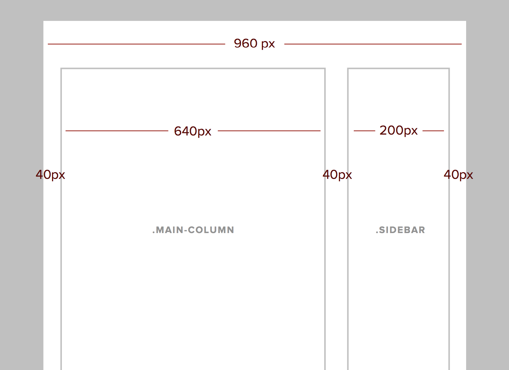

Beginning HTML and CSS - Responsive Design
Class 5
Welcome!
Girl Develop It is here to provide affordable and accessible programs to learn software through mentorship and hands-on instruction.
Some "rules"
- We are here for you!
- Every question is important
- Help each other
- Have fun
What is Responsive Design?
"Responsive web design is a web design approach aimed at crafting sites to provide an optimal viewing experience—easy reading and navigation with a minimum of resizing, panning, and scrolling—across a wide range of devices (from desktop computer monitors to mobile phones)."
Examples of RWD
- bostonglobe.com
- css-tricks.com
- envylabs.com
- trentwalton.com
- happycog.com
- alistapart.com
- microsoft.com
3 Elements of RWD
- Fluid grid
- Flexible media
- Media queries
Fluid Grid
- Define container widths as %, not px.
- This percentage will represent the width of the containing element, which means it will reflow according to viewport widths.
Fluid Grid
Target / Context = Result
- Target: The div that you are trying to find the percentage of.
- Context: The div that the target is contained by (the parent).
- Result: The width as a percentage (yay!)
Fluid Grid
Fluid Grid
Fluid Grid
Fluid Grid
640px ÷ 960px = .666666667
.6666667 = 66.6667%
Fluid Grid
Fluid Grid
Fluid Grid

Fluid Grid
200px ÷ 640px = .3125
Let's Develop It
Let's create a fluid layout with a container, a header, a content section, a sidebar and a footer.
Flexible Media
- Media = Images, Videos, Objects
- Like the grid, percentages make images flexible.
Flexible Media
Flexible Media
<img src="http://placekitten.com/700/200" alt="kitten">Flexible Media
<img src="http://placekitten.com/700/200" alt="kitten" class="cat">
.cat {
float: left;
width: 50%;
}
Let's Develop It
Using percentage widths & flexible images, add 3 equally wide cat photos to your page:
Media Queries
Media Queries apply CSS to specific parameters (usually width, but can also be resolution, device size, height).
Media Queries
@media only screen and (min-width: 600px) {
property: value;
}
Media Queries
http://css-tricks.com/snippets/css/media-queries-for-standard-devices/
Media Queries
What to target with media queries:
- Floats
- Font sizes
- Hovers
- Navigational Elements
- Click/Tap Targets
- Display/Hide content
- Everything!
Let's Develop It
Remove all width and float properties to create a very simple mobile site. Resize your browser window and decide where media queries should go.